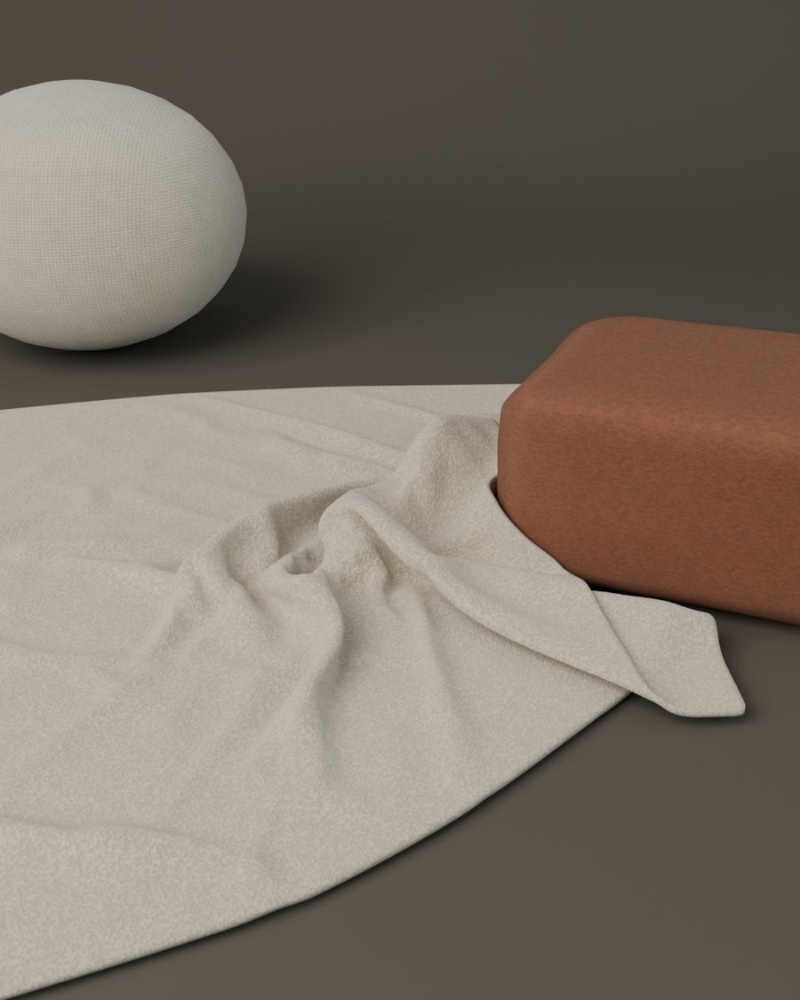
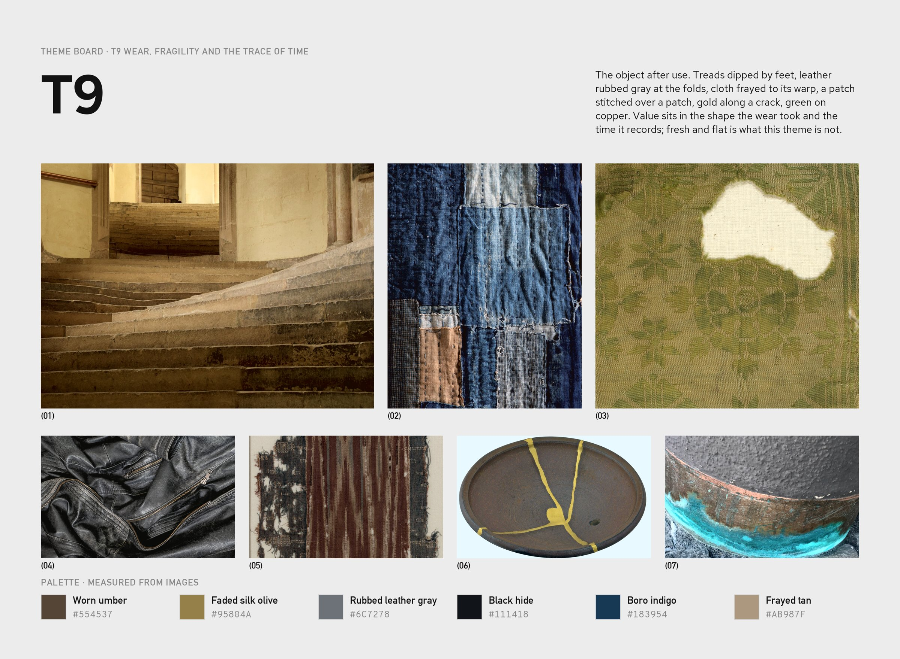

Theme T9 · Selected
Wear, fragility and the trace of time
T9 focuses on the materialization of wear and tear: the quality of its shape, and how it can represent notions of time and space, like the frequency of light and sound, morphing over time. Wear on leather is the same thing happening over a longer time span. T9 is about the object's change over time; T10 is about how one feels (emotions and senses) and how to activate that feeling.



Overall mood
The object after use. Treads dipped by feet, leather rubbed gray at the folds, cloth frayed to its warp, a patch stitched over a patch, gold along a crack, green on copper. Value sits in the shape the wear took and the time it records. Close, tactile, lit evenly; nothing fresh and flat.


Definition and test
Wear on leather is the same thing happening over a longer time span. T9 is about the object's change over time; T10 is about how one feels.
Test. The wear is visible as a form, the form tells how it happened, and the object keeps the mark. Three checks: (1) a wear, fade, repair or patina process is visible in the image; (2) its shape is legible (direction, rate, where hand or foot met the object); (3) the object stays an object, not a graphic. Printed or laser-faked distress fails (2), because there is no process behind the shape.
Visual themes
01 The shape of wear. Key motifs: dipped treads, rubbed folds and seams, a ragged hole. Sub motifs: wear that follows use paths, gray where leather bends. Images (01), (04), (03).
02 Repair as a second layer. Key motifs: patch over patch, running stitch, gold along a crack. Sub motifs: mend visible, repair as the most valued part. Images (02), (06).
03 Fade and fray. Key motifs: color leaving cloth, warp showing where the weft has gone, loose fringe. Sub motifs: edges that dissolve, one hole. Images (03), (05).
04 Patina. Key motifs: brown copper turning turquoise at the edge. Sub motifs: a boundary where chemistry stopped. Image (07).
Hero material
**** Textile and leather carry the set: faded green silk with one hole (03, Met 463253), rust-red ikat strip with torn edges (05, Met 443604), indigo boro with sashiko stitching (02), a worn black leather jacket (04). Close views show weave, stitch and surface break-up.
**** The material that fits the test is one that records use: natural-fiber cloth and vegetable-tanned or aniline leather, which fade, fray and crease in shapes a reader can follow. Later candidates stay hypotheses; feasibility is for Engineering and Lab.
Visual elements
Photography. Even, raking or diffused light that shows relief; true color, no mood grade; close views with the whole object edge or one clear break.
Type and graphics. Plain captions in the Style Guide faces; number only on the board.
Layout habits. One large image of wear as form, then close-ups of the material.
Detail. Fringe, stitch, ragged hole, rubbed seam, a patina boundary.
Against (what T9 replaces)
Printed or laser-faked distress with no process behind it; flat, directionless damage; wear as costume. A new object can be a copy; the trace of time costs something to fake (theory note, Idea).
Not T10. Calm and softness do not qualify a repair image for T9, and sensory feeling is T10's. See Relation to T10.
Relation to T10
T9 owns repair (boro, sashiko, darning, kintsugi), wear, fade, fray, patina and the shape of damage over time: the object. T10 keeps edgeless and seamless surface, light without a source, sheer and felted cloth, and the felt quality of care: how one feels. Boro, darning and kintsugi that the T10 note left flagged T10? are claimed here. Where a repair is only calm to look at, it stays with T10 as a doubtful case. Not claimed by T9: the T10 test of "soft but with presence".
Visual story
Read the board as a change of scale. First the large shape of wear (01) and the patchwork made of repairs (02), then the single hole in a patterned cloth (03). The second row is material up close: leather rubbed gray at the folds (04), a strip frayed to the warp (05), gold on a crack (06), green on a copper rim (07). Same idea from the stair to the thread.
Core group and notable works
From the theory note (the log, not yet checked against images): Rei Kawakubo, Martin Margiela, Yohji Yamamoto, Ann Demeulemeester, Arte Povera, Burri, Gee's Bend quilters. No image of their work is on this board; brand and designer names are references only, not theme images.